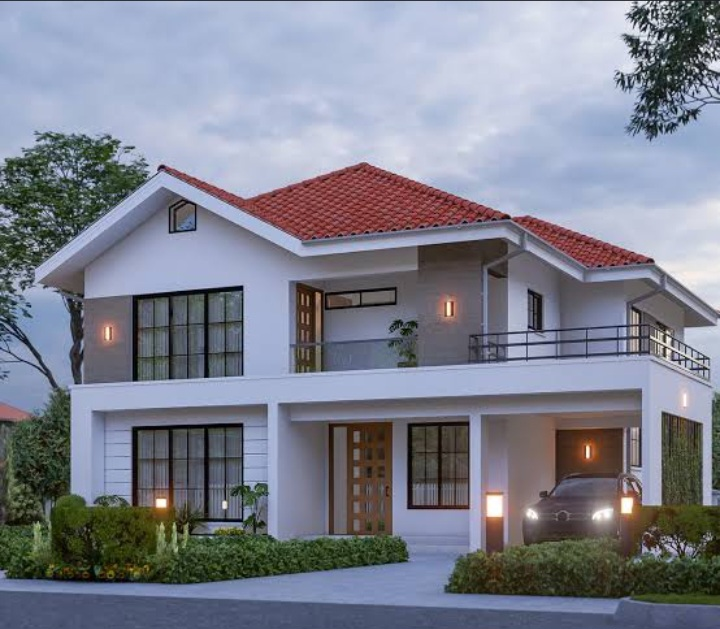

Mission
🏡Accompagner Chaque Projet avec Expertise et Bien veillance:
- Écoute active de vos besoins, contraintes et aspirations.
- Conseils transparents et honnêtes, basés sur une analyse précise du marché.
- Accompagnement sur-mesure de la première visite jusqu’à la remise des clés.
🔍Accompagnement sur-mesure de la première visite jusqu’à la remise des clés.
- Outils digitaux performants : visites virtuelles, signatures électroniques, suivi de dossier en temps réel.
- Processus optimisés pour gagner en efficacité sans sacrifier la qualité relationnelle.
- Veille marché continue pour vous proposer les solutions les plus adaptées à votre situation.
🤝Construire des Relations Duraples Basées sur la Confiance:
- Transparence absolue sur les coûts, les délais et les étapes de chaque projet.
- Disponibilité et réactivité pour répondre à vos questions et résoudre les éventuels problèmes.
- Satisfaction garantie grâce à un engagement qualité exigeant.
